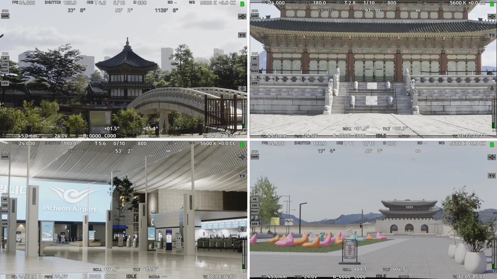

고정 프레임 예산에서의 씬 최적화


LED 월에 송출하는 Unreal 환경의 프레임 비용을 줄였다. 로케이션 5곳 중 3곳을 직접 제작하고, 외주 데이터를 사용한 2곳을 포함해 5곳 전체의 최적화를 맡았다. 촬영 뷰는 로케이션마다 10개, 총 50개로 고정되어 있었다.
제작 조건과 측정 기준#
최종 출력은 RTX A6000 렌더 머신 11대와 3840×1536 LED 패널 11개였다. 송출에는 nDisplay가 아닌 Pixera 미디어 서버를 사용했다. LED 목표는 30fps였으며 현장은 gen-lock으로 24fps에 고정됐다.
현장에서 최적화하기 어려워 개발 PC의 RTX 4090에서 CineCamera 위치와 조건을 고정하고 전후를 비교했다. 개발 PC에서는 90fps를 기준으로 여유를 확보한 뒤 현장에 반영했다. 아래 수치는 제출한 포트폴리오의 측정 기록이며, 홈페이지 작업 중 다시 측정한 결과는 아니다.
지오메트리만 줄여서는 해결되지 않았던 병목#
기준 프레임 시간은 13.85ms, GPU 시간은 11.03ms였다. stat과 Unreal Insights를 대조한 결과 CPU 쪽을 먼저 살펴볼 필요가 있었고, 가시성 계산인 ComputeViewRelevance가 4.285ms를 차지했다. 레이트레이싱 인스턴스는 65,647개였다.
고정된 촬영 뷰를 기준으로 원경·중경·근경을 나눴다. 경복궁의 식생 바람과 바닥 표현, 공항의 유리 반사처럼 화면에서 중요한 요소는 유지했다.
조치#
- 지형·식생·프랍 중 반사에 기여할 필요가 없는 컴포넌트의
Visible in Ray Tracing을 해제했다. - 고정 뷰에서 보이지 않는 범위를 Cull Distance Volume으로 정리해 가시성 계산 대상을 줄였다.
- Lumen과 Nanite 설정을 조정하되, 공항의 유리 반사 품질은 유지했다.
- 무거운 메시를 버텍스 수와 씬 삼각형 점유율로 정리해 팀에 전달했다. 리토폴로지, 노멀 베이크, 텍스처로 보완할 부분을 함께 정했다.
동일한 고정 뷰에서 비교한 결과#
| 지표 | 변경 전 | 변경 후 |
|---|---|---|
| FPS | 72.2 | 94.1 |
| 프레임 시간 | 13.85ms | 10.63ms |
| GPU 시간 | 11.03ms | 7.93ms |
| 레이트레이싱 인스턴스 | 65,647 | 15,671 |
| ComputeViewRelevance | 4.285ms | 2.420ms |
| 텍스처 메모리 | 5,128MB | 4,109MB |
이 비교는 RTX 4090 개발 PC의 동일 CineCamera 뷰 기준이다. 여러 조치를 함께 적용한 전후 결과이므로 각 조치의 독립적인 성능 기여도로 해석하지 않는다.
현장 송출과 한계#
현장 LED 송출은 11fps에서 gen-lock 상한인 24fps까지 개선됐다. 현장 24fps와 개발 PC 94.1fps는 하드웨어와 출력 조건이 다른 결과다.
미디어 서버 송출 버퍼는 현장과 합의해 2개에서 1개로 줄였다. 오류 내성을 일부 낮추는 대신 프레임 드랍으로 촬영이 중단되는 위험을 줄이려는 선택이었다. 다른 현장에 그대로 적용하는 일반적인 권장값은 아니다.
작은 프랍의 그림자와 원거리 WPO 등은 촬영 스팟에서 구분되지 않는 범위에서 조정했다. 인스턴싱의 개별 기여도는 이 측정으로 확인하지 못했다.